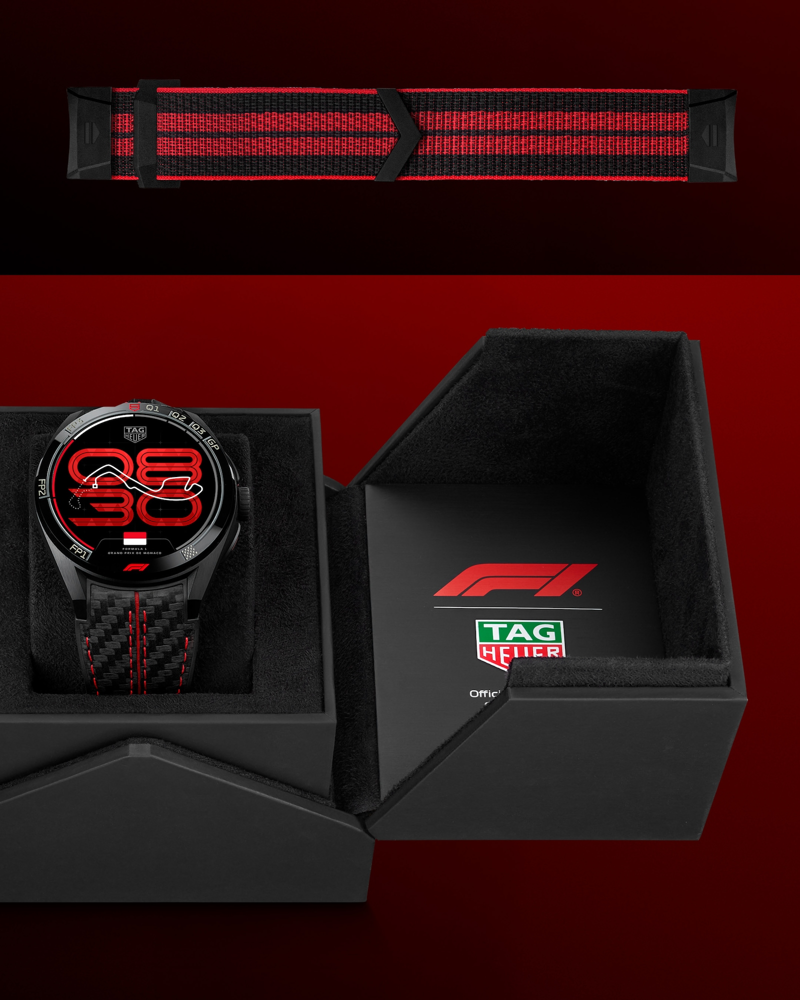
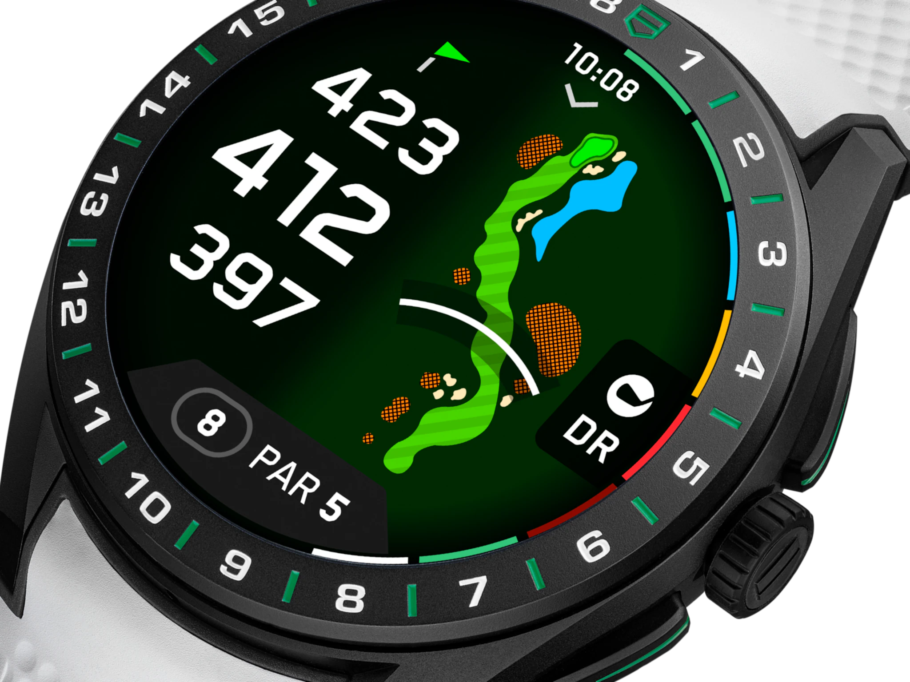

The Smartwatch That Refuses to Dress Down
There’s a quiet rebellion happening on your wrist—and it looks like a chronograph.
The TAG Heuer Connected Calibre E5 (45mm) isn’t trying to beat your Apple Watch at being a gadget. It’s doing something far more interesting: reminding you that technology can still feel like craft.
Hero Piece: The E5, Steel and Intentional
At 45mm, this is unapologetically a statement watch. Steel case, ceramic bezel, sapphire crystal—it wears like a mechanical piece first, a digital one second. And that’s entirely the point.
TAG didn’t just bolt a screen into a case—they engineered presence. The kind that catches light across chamfered edges and reminds you this came from La Chaux-de-Fonds, not Silicon Valley.
Design: Carrera DNA, Digitized
This watch carries the genetic code of the TAG Heuer Carrera—bold lugs, tactile pushers, and a bezel that feels functional, not ornamental.
- 45mm stainless steel case with ceramic bezel
- Sapphire crystal protecting a crisp OLED display
- Interchangeable straps—from rubber to steel to leather
- Water resistance up to ~50m
It’s built like a watch you’d keep… even when the tech ages out.
And that’s rare in this category.

The Tech: Subtle, Fast, and Focused
TAG Heuer made a controversial move here—stepping away from standard Wear OS in favor of its own system. The result?
- Cleaner, faster UI
- Less bloat, more intent
- Seamless iOS and Android compatibility
Under the hood, you’re getting:
- Heart rate, GPS, barometer, accelerometer
- Fitness modes (running, cycling, golf, swimming)
- Bluetooth, Wi-Fi, GNSS connectivity
- ~24-hour battery (real-world smartwatch territory)
It doesn’t try to be your phone. It tries to be a better watch that happens to be smart.
The Experience: Where It Wins
This is where the E5 separates itself from the herd.
It’s not about app ecosystems or endless notifications—it’s about how it feels to wear tech that respects tradition.
Reddit user sentiment actually nails it:
“It is unmistakably a TAG Heuer watch first and a smartwatch second.”
And that’s the thesis.

Variants That Lean Into Lifestyle
If the standard model is your daily driver, TAG gives you personality packs:
Motorsport obsessive?
→ TAG Heuer Connected Calibre E5 x Formula 1 Edition Watch
(Live race data, track-inspired dials)
Fairway tactician?
→ TAG Heuer Connected Calibre E5 Golf Edition Watch
(40,000+ course maps, shot tracking)
Classicist with a bracelet bias?
→ TAG Heuer Connected Steel Bracelet
Each one shifts the vibe without losing the core identity.
The Trade-Off (Because There Is One)
Let’s be honest—this isn’t the “smartest” smartwatch.
You give up:
- Deep app ecosystems
- LTE/cellular independence
- Some convenience features (like payments, depending on version)
But what you gain is something most smartwatches can’t offer:
- 👉 Longevity of design
- 👉 Emotional connection
- 👉 Actual wrist presence
Verdict: For People Who Don’t Want a Gadget
The Connected E5 isn’t for everyone.
It’s for the person who:
- Would never wear a plastic smartwatch
- Appreciates finishing, weight, and heritage
- Wants tech—but refuses to look like they’re wearing tech
This is what happens when a century-old watchmaker decides to play in the digital space… and refuses to compromise its identity.
Product Comparison
| Attribute | Calibre E5 (45mm) | F1 Edition | Golf Edition | Black Dial Legacy |
|---|---|---|---|---|
| Price | $2,150 | $3,150 | $3,150 | $1,319 |
| Case Size | 45 mm | 45 mm | 45 mm | 45 mm |
| Core Use | Everyday luxury | Motorsport-focused | Golf & sport tracking | General smartwatch |
| Materials | Steel + ceramic | Titanium/DLC + ceramic | Mixed sport materials | Steel/titanium |
| Unique Feature | Balanced luxury-tech hybrid | F1 live race integration | Course maps & shot tracking | Lower price entry point |
Final Take
If you’re chasing specs, look elsewhere.
If you’re chasing feeling—the weight of steel, the click of pushers, the idea that your smartwatch might still matter in five years—this is one of the most compelling pieces in the category.
It doesn’t scream innovation.
IT WEARS IT WELL.